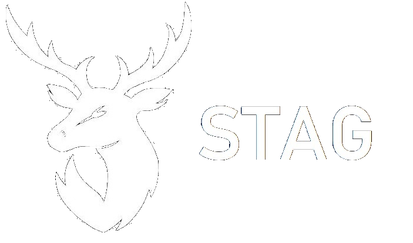

About
At Stag, we believe that it's very important to get to know the details of
a team working with repositories.Our Aim is to provide our users the best and most efficient way
of getting to know how was the team management throughout the specified project.
This would not only help management and owners to use the statistical data of contribution
made by each member of the team.
This would be very helpfu as this could easily let the management know
where is their team lacking which could lead to huge improvements.
This would let the management to give feedback to the teams about where they lacked and
where they have to improve.
Directions to use
Here are some directions to use the Stag for best outcomes:
1.Type the repository "URL" or the Repository "name" that you want to search.
2.Press "Search" button on bottom.
3.Get most of the statistical data on the main page
4.Surf through other links accordingly
Creators
This would not have been possible without our professionals namely:
Bryan Gunawan
Teigan Rosen
Gurusewak Singh
Lucy Pugh
Alex Hyde
Credits for templates
The template idea for the project has been taken from "https://demos.creative-tim.com/light-bootstrap-dashboard/examples/dashboard.html":
Light Bootstrap by creative Tim